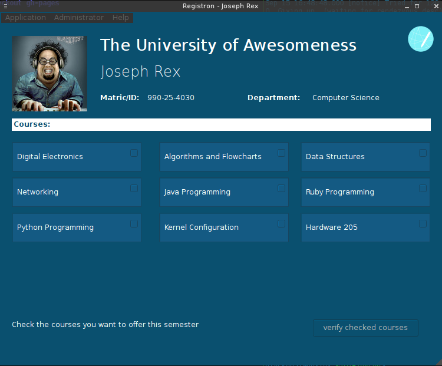

Registron Speech-based student registration system
What is Registron about?
Registron is a speech based registration system. A desktop graphical user interface application with interactive voice communication for users. Registron allows schools to manage their students and the courses they offer. Also, the students take advantage of its user-friendly environment to register their semester courses.

A light and awesome feel

Scalable
Interactive Audio
User Friendly
Windows OS Support
Py2exe has been used to create windows bindings for the program, making it work on any windows machine even without python or any of registron's third party modules being installed.
The Student's portal

Contributors